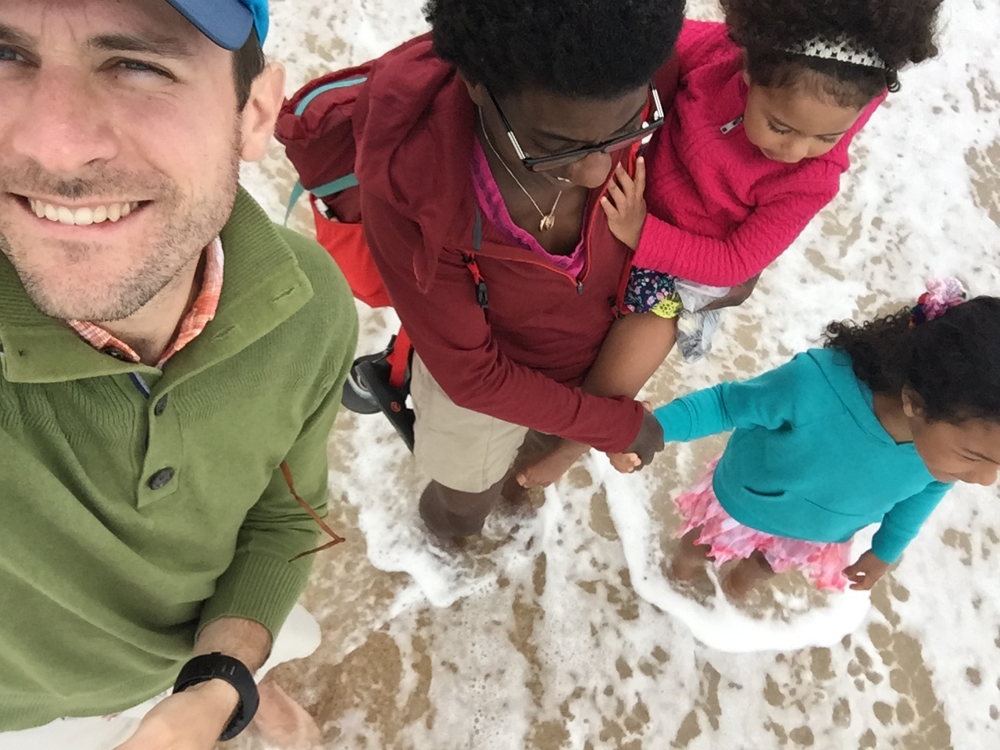

Jules Milner-Brage for Brookline Town Meeting (Precinct 12)---

A family photo (left to right):
me; my wife, Karine; our daughters, C. and A.
(July 28, 2017)
Hello!
My sense is that in Brookline, in 2018, we are in a critical period
for the sound management of Town services and of the physical public
realm while welcoming new neighbors and supporting existing ones.
I believe that we can meet this challenge/opportunity by leveraging,
and further bolstering, some of Brookline's (and Precinct 12's)
long-lived strengths:
(+) vibrant neighborhood schools and business districts;
(+) diversified transportation options;
(+) human-scale urban planning;
(+) and care for trees, streets, and parks.
I am running for Town Meeting in Precinct 12 to contribute to this
important work. And I am interested to hear your thoughts about how
our representative delegation can best serve our neighborhood and
larger community.
A few resources regarding my:
(+) Work/personal/education background.
(+) Motivation and views (below [#A1]),
written in response to an election questionnaire by
Brookline PAX, who subsequently endorsed my candidacy.
Please support me with your vote on May 8 at Runkle School.
Best regards,
Jules
--------------------------------------------------------------------------
[#A1---]
Why am I running?---
I am running for Town Meeting in Precinct 12 of Brookline because I
want to contribute my energy and perspective to strengthening and
guiding our community at this critical moment for the administration
of Town services and of the physical public realm, with implications
for sustainability, equity, and excellence.
I am especially interested in digging into the challenges and
opportunities involved in: supporting the financial health and
instructional quality of our public schools; improving the safety
and efficiency of our transportation infrastructure; and maintaining
and improving the quality and accessibility of our natural and built
environment. (Project-based and subject-matter-integrative educational
curriculum; people-centered private and public land use; thoughtfully
mixed commercial and residential development in our local business
districts; and planting and conserving trees are examples of
approaches that I advocate for.)
As a resident of Aspinwall Hill since 2009, engaged parent to pre-
and elementary-school-age children, a creative and deeply analytical
thinker and learner, and someone who takes great joy in getting around
(and being outdoors) in our community by walking and biking, I believe
I am well qualified to serve Precinct 12 and Brookline as a whole.
What are my views on the Town operating budget override ballot
questions (in 2015 and now in 2018)?---
I support these overrides. I feel that we need to support public
education as a critical public good and inter-generational compact.
In future school planning and budgets, I would like to see more focus
on subject-integrative, project-based curriculum and less on
standardized-test-aligned discrete-subject instruction.
And I am concerned that our tax base in Town is insufficiently
diversified---tilted toward residential property tax. It seems that
this has negative impacts: of driving a wedge between residents of
different age groups and/or financial means; and of possibly creating
some disincentive for increases in housing supply that could improve
affordability of residence. I want to be part of continuing the
Brookline tradition of funding the public schools while concurrently
continuing to work on diversifying their funding.
What are my views on the appropriate relationship between the
Town/Schools and Town/School employees?---
Cooperation and transparency, plain and simple. Residents, Town/School
employees, employee unions, and Town/School appointed and elected
officials should view themselves as partners in delivering high-
quality services by means of high-quality jobs and excellent, open
communication. Unions have an important role to play in ensuring that
this community partnership is successful; it is critical that the Town
engage with the unions in good faith and that the unions represent an
inclusive membership.
What are my views on balancing commercial development,
"market value" housing, and affordable/subsidized housing?---
My sense is that insufficient supply of housing relative to demand,
insufficient (or insufficiently safe or reliable) transportation
options, and an insufficient component of other-than-retail commercial
real-estate use (and development) are major challenges to maintaining,
let alone increasing, the financial accessibility of Brookline
residence and to the financial sustainability of providing Town
services. Thus, in my mind, it is important for the Town to support
the development of both more housing and better commercial facilities
in order to enable more people to both live and work in Town and to
provide a more diversified tax base for supporting services.
I believe that focusing on walking-, biking-, and mass-transit-
(more than car-travel- and car-parking-) oriented, mixed residential-
commercial land use would serve to both increase the quality of
structures/spaces that are (re)developed and to increase the cost-
efficiency of doing that development. And I believe that focusing on
these types and this mix of projects could, thus, increase the number
of opportunities to include subsidized housing in the mix and make it
less financially challenging to do so.
Living/working in a community with non-car-dependent access (i.e.,
at an easy walking and biking and/or moderate mass-transit distance)
to daily destinations---e.g., to workplaces and schools; to parks,
libraries, artistic venues, and religious centers; to grocery stores,
hardware stores, and medical care---can enable civic participation by
people of a broad range of ages and abilities and can enable one to
live a more space-efficient lifestyle, which in turn can support
affordability and reduced ecological impact.
And there can be substantial synergy between conservation (and
restoration) of the character of neighborhoods and reduced
requirements for car parking at home, business, and municipal
buildings, and on streets. Less need for car parking (derived from
less need for car use or even car ownership) can enable design of
less-massive built structures, and better non-built public and private
spaces around these structures, by means of more good-quality space
for people (living/working/learning) yielded per each given
parcel/street's total built footprint.
What are my views on the current "40B" proposals and Town efforts
to limit them?---
I think that the 40B 'breather' period---so that the Town can get its
bearings and develop a strategy regarding how best to cultivate better
development projects and how to do so more efficiently---is a good
thing. But I am concerned that the Town may not be proceeding with
enough urgency in embracing sensible, beneficial development or
embracing the urban-planning policies (see response to prior question
for some examples) that are more likely to yield socially,
ecologically, and aesthetically good development proposals and
results.
In my mind, we in Brookline are privileged to live in a truly
wonderfully central geographic location within the inner Boston area
that, through historical development and planning characteristics such
as the density of homes, multiple local business districts, the Town's
long-lived practice of planting and maintaining trees, and provision
of mass-transit along multiple routes, has a remarkably walkable and
bikeable environment in so many of our neighborhoods. So, it is
important to embrace policies that leverage and reinforce these
existing strengths as a means for welcoming new neighbors in a way
that will increase equity and diversity.
What are my views on environmental protection?---
Reduction > reuse > recycling, and I am excited about the progress
that the Town is making in supporting these practices and this
prioritization regarding consumption, packaging, and waste. (It would
be great if one day we could provide municipal composting service.)
Similarly, I am excited about progress to concurrently increase the
ecological sustainability and the local resilience of our energy
supply through a Town shift to a greater portion of renewable sources,
especially locally captured/generated ones.
Conservation and planting of trees, regardless of whether in a park or
in a street-side planting strip, is a wonderful Town tradition, both
for ecological and livability reasons. And the number and
accessibility of our neighborhood parks is a tremendous asset.
As I have noted from a number of angles above, I feel that we in
Brookline need to improve our approach to transportation. We simply
are not doing enough to prioritize the quality and capacity of
accommodation for more space-efficient, more healthful, more
ecologically sustainable ways of getting around Town: walking, biking,
and mass-transit. We have a lot of existing public assets in support
of walking and mass-transit. But we are behind where we should be in
supporting bicycling as a safe and comfortable means for work/school
commuting, errands, and recreation. (And we should do more to improve
and increase our facilities/services for all three of the
aforementioned non-car travel modes.)
My sense is that, in Brookline, the challenge now to our doing better
in the transportation realm is that the Town has already done a good
job of plucking much of the 'low hanging fruit'---whether it be
ensuring sidewalks and painting unprotected bike lanes where there is
ample street width, or working toward traffic signal priority for
mass-transit (bus, trolley) vehicles. Thus, we have reached a point
where some rebalancing of car parking and/or car traffic capacity may
be necessary in some locations in order to make progress on
establishing, e.g., protected bike lanes, dedicated bus lanes, wider
sidewalks, and better street-shade tree plantings. Supporting the
recent trial of a buffered bike lane on Beacon St. west-bound at Corey
Hill---achieved by repurposing one of two car travel lanes---is a
great example of the kind of leadership in trying out transportation
improvements, to see what works via experimentation, that Town Meeting
and various Boards/Committees should embrace more of.
What are my views on recent conversations in Town about diversity
and inclusion, including recent (2017) Town Meeting warrant articles
on the topic of criminal justice reform?---
I feel that we in Brookline can and should do more to combat racial
assumptions that emerge in community interactions, which have the
negative effect of creating needless distance between people, e.g.:
between neighbors; in the schools, both between student peers and
between students and their teachers; between Town employees; and
between Town officials and the public (with the potential for
especially great hazard in law enforcement and public safety
situations).
I support efforts to change legal and policing policies and practices
that bias our criminal justice system toward imprisonment (rather than
other individual and/or community remedies to target underlying
reasons for a legal infraction, if at all possible) and, worse, that
disproportionately ensnare people from minority, often disadvantaged,
groups. And I do feel that this is worthy of Town Meeting discussion
with the goal of documenting an official Town vision on this important
topic.
{kind=link}